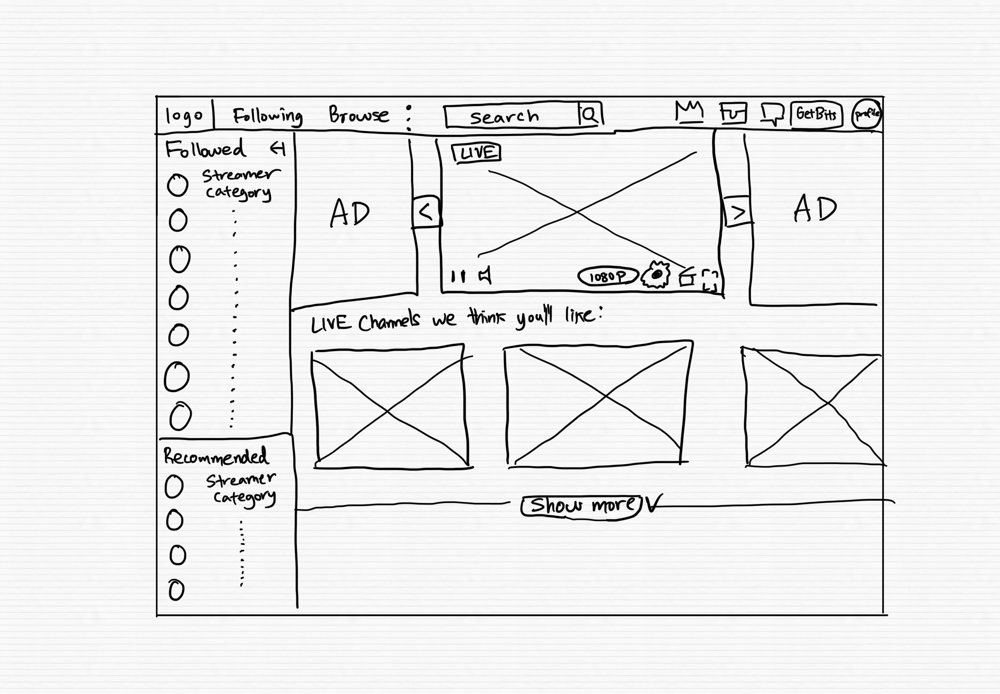
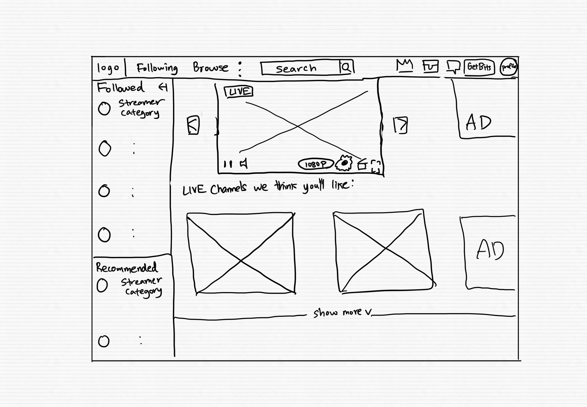
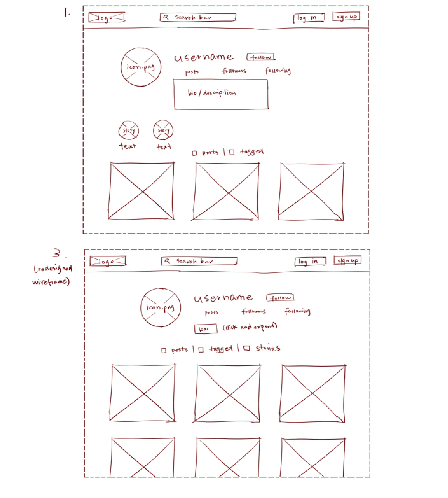

Using the favorite website you chose in homework 1, create a wireframe for one page of it using pen/paper, PowerPoint, or any your tool of choice. (use the 'img' tag!) Make sure to let us know what the name of your website is (Use the 'p' tag!)
Twitch
Try to improve the website you've chosen, and create a redesigned wireframe of one page for the same website using the principles of visual hierarchy that you learned from the article.
Twitch Redesign
What is the goal of the website? Who is it intended for? How does the design accomplish this? Write 2-3 sentences answering these questions. (Use the 'p' tag again!)
The goal of the website is to entertain people through showing different streams. It's main section is just a wide overview of all the streams that align with your interests.
Write 2-3 sentences about what problems your redesign addressed, and how it solved them.
Twitch's website seems to be super cluttered and can make the feel user feel a bit dizzy at times. I added more whitespace in the lists in the side bar so that user wasn't overwhelmed. I did the same for the video boxes in the middle as well by adding more white space inbetween. I also moved the ads in a way they don't distract the user from searching new content.
NOTE: Make sure to include the wireframe images in the website and don't just put it in your assets folder!
Your wireframes should look something like this:
